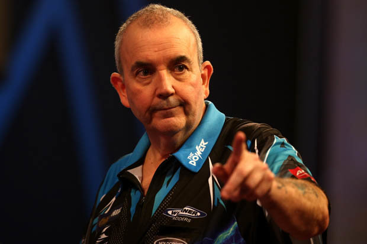

Phil Taylor dominated darts for over two decades and won 214 professional tournaments, including a record 85 major titles and a record 16 World Championships.
In 2015, the BBC rated him among the ten greatest British sportsmen of the last 35 years
The best known as the most recognisable master of World Darts, Phil ‘The Power’ Taylor is the best darts player to have ever graced the oche.
One of the highest achieving sportsmen in Britain, Phil is forever breaking records and continues to
make it harder for anyone to ever be recognised as a more successful player of the sport.
Phil Taylor. He has been called The Crafty Potter, The Governor, The Godfather and The Power. He has been described as a winning machine, a competitive animal and a genius. He is Philip Douglas Taylor - 16 x World Darts Champion, and arguably - the greatest sportsman the world has ever seen. Phil joined Target in 2014 and has since worked closely with our specialist team of designers 